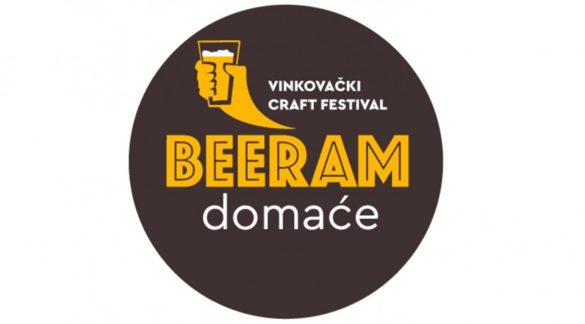

HTML (HyperText Markup Language) je kostur Web stranice. Često je prvi jezik kojeg dizajneri i front-end programeri nauče.
CSS (Cascading Style Sheet) je jezik za definiranje prezentacijskih svojstava HTML stranica.
Varijable omogućavaju da povežemo ime s nekom vrijednošću. Definiraju se korištenjem ključnih riječi:
Koraci za izgradnju projekta